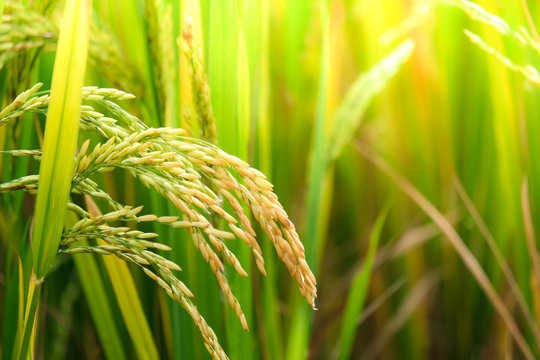

FARMER DASHBOARD
🌱 My Crops
View crop cards, stages and health.

🌱 My Crops
View crop cards, stages and health.
✨ AI Support
This frontend is ready for backend/API connection later.
📌 Next Step
Use the side menu to move to another feature.
More dashboard features
Soil Analysis
See the soil analysis workflow and nutrient summary.
Soil Image Upload
Choose JPEG/PNG or capture soil using your phone camera.
Soil Test
Enter N, P, K, pH, organic matter and moisture.
Weather
Keep weather and irrigation notes visible.
Crop Recommendation
Review soil-based crop suggestions.
Field History
Review previous analysis records.